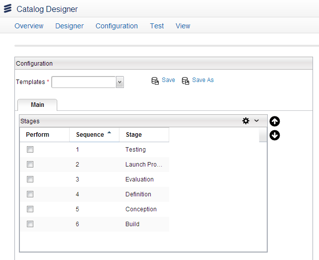
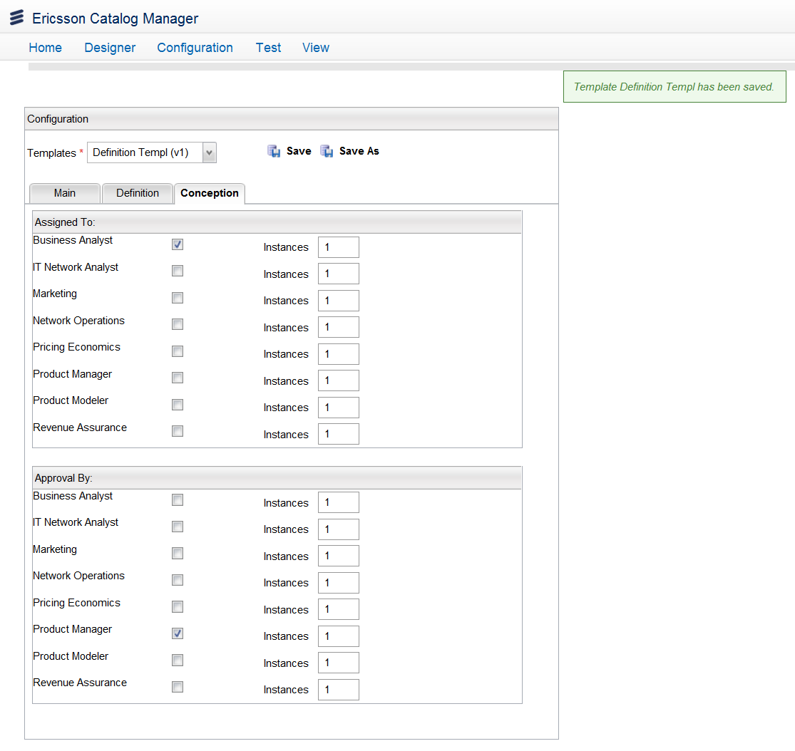

Configure Templates
You can configure new templates in the Catalog application. These templates are used while creating PLD projects. A default template is used to create new templates. The default template contains all the information related to the stages, participants, and actions. New templates are saved in the Orchestration Framework (OF) as Fulfillment Plan Specifications (FPS) and Technical Action Specifications (TAS). You can modify (add or remove) actions, stages, and participants in an existing template.
Create a New Template
To create a new template, follow these steps:
- Access the Configure Templates option using the Quick Start menu on the Ericsson Catalog Manager home page or from the menu bar by clicking Configuration > Configure PLD > Configure Templates.
- On the Configuration page, the Main tab shows default stages for the lifecycle. Select the lifecycle stages as per your needs (for example, Conception and Definition).

- The corresponding stage tabs appear besides the Main tab. Click the first stage tab (for example, Definition).
- Each stage contains two types of PLD tasks COMPLETE and APPROVE respectively in the sDections Assigned to and Approved by along with available participants. Select participants to assign these tasks. For example, you can select Business Analyst for the Assigned to task and Product Manager for the Approved by task. Repeat the same for the other stages.
- Click the Save button. The Save Dialog appears.
- Enter the information for the Config Name and the Label fields (for example, DefinitionTemp), and then click the Save button.
- A message appears, indicating that you have successfully saved the template.

|